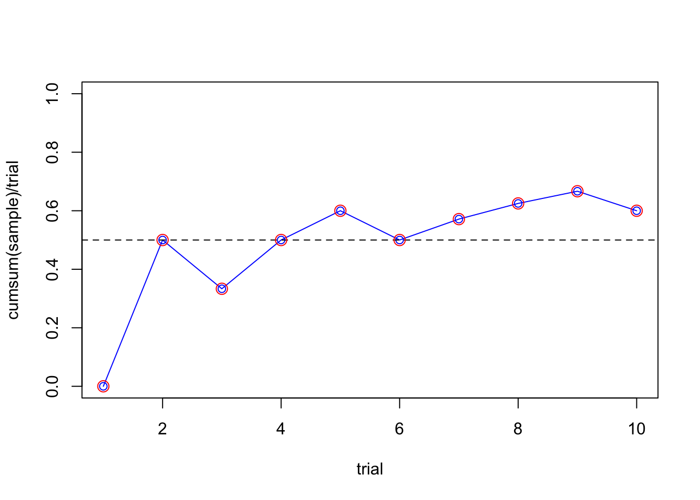
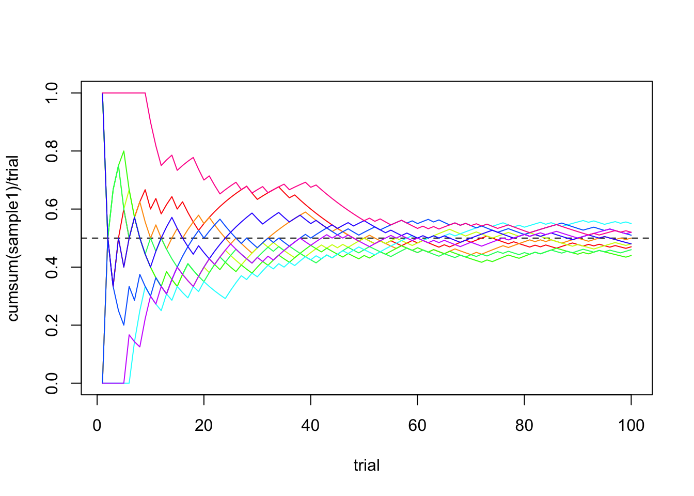

<!DOCTYPE html>

<html>

<head>

<meta charset="utf-8" />
<meta name="generator" content="pandoc" />
<meta http-equiv="X-UA-Compatible" content="IE=EDGE" />


<title>section05.knit</title>

<script src="site_libs/header-attrs-2.29/header-attrs.js"></script>
<script src="site_libs/jquery-3.6.0/jquery-3.6.0.min.js"></script>
<meta name="viewport" content="width=device-width, initial-scale=1" />
<link href="site_libs/bootstrap-3.3.5/css/bootstrap.min.css" rel="stylesheet" />
<script src="site_libs/bootstrap-3.3.5/js/bootstrap.min.js"></script>
<script src="site_libs/bootstrap-3.3.5/shim/html5shiv.min.js"></script>
<script src="site_libs/bootstrap-3.3.5/shim/respond.min.js"></script>
<style>h1 {font-size: 34px;}
       h1.title {font-size: 38px;}
       h2 {font-size: 30px;}
       h3 {font-size: 24px;}
       h4 {font-size: 18px;}
       h5 {font-size: 16px;}
       h6 {font-size: 12px;}
       code {color: inherit; background-color: rgba(0, 0, 0, 0.04);}
       pre:not([class]) { background-color: white }</style>
<script src="site_libs/navigation-1.1/tabsets.js"></script>
<link href="site_libs/highlightjs-9.12.0/default.css" rel="stylesheet" />
<script src="site_libs/highlightjs-9.12.0/highlight.js"></script>

<style type="text/css">
  code{white-space: pre-wrap;}
  span.smallcaps{font-variant: small-caps;}
  span.underline{text-decoration: underline;}
  div.column{display: inline-block; vertical-align: top; width: 50%;}
  div.hanging-indent{margin-left: 1.5em; text-indent: -1.5em;}
  ul.task-list{list-style: none;}
    </style>

<style type="text/css">code{white-space: pre;}</style>
<script type="text/javascript">
if (window.hljs) {
  hljs.configure({languages: []});
  hljs.initHighlightingOnLoad();
  if (document.readyState && document.readyState === "complete") {
    window.setTimeout(function() { hljs.initHighlighting(); }, 0);
  }
}
</script>


<style type = "text/css">
.main-container {
  max-width: 940px;
  margin-left: auto;
  margin-right: auto;
}
img {
  max-width:100%;
}
.tabbed-pane {
  padding-top: 12px;
}
.html-widget {
  margin-bottom: 20px;
}
button.code-folding-btn:focus {
  outline: none;
}
summary {
  display: list-item;
}
details > summary > p:only-child {
  display: inline;
}
pre code {
  padding: 0;
}
</style>


<style type="text/css">
.dropdown-submenu {
  position: relative;
}
.dropdown-submenu>.dropdown-menu {
  top: 0;
  left: 100%;
  margin-top: -6px;
  margin-left: -1px;
  border-radius: 0 6px 6px 6px;
}
.dropdown-submenu:hover>.dropdown-menu {
  display: block;
}
.dropdown-submenu>a:after {
  display: block;
  content: " ";
  float: right;
  width: 0;
  height: 0;
  border-color: transparent;
  border-style: solid;
  border-width: 5px 0 5px 5px;
  border-left-color: #cccccc;
  margin-top: 5px;
  margin-right: -10px;
}
.dropdown-submenu:hover>a:after {
  border-left-color: #adb5bd;
}
.dropdown-submenu.pull-left {
  float: none;
}
.dropdown-submenu.pull-left>.dropdown-menu {
  left: -100%;
  margin-left: 10px;
  border-radius: 6px 0 6px 6px;
}
</style>

<script type="text/javascript">
// manage active state of menu based on current page
$(document).ready(function () {
  // active menu anchor
  href = window.location.pathname
  href = href.substr(href.lastIndexOf('/') + 1)
  if (href === "")
    href = "index.html";
  var menuAnchor = $('a[href="' + href + '"]');

  // mark the anchor link active (and if it's in a dropdown, also mark that active)
  var dropdown = menuAnchor.closest('li.dropdown');
  if (window.bootstrap) { // Bootstrap 4+
    menuAnchor.addClass('active');
    dropdown.find('> .dropdown-toggle').addClass('active');
  } else { // Bootstrap 3
    menuAnchor.parent().addClass('active');
    dropdown.addClass('active');
  }

  // Navbar adjustments
  var navHeight = $(".navbar").first().height() + 15;
  var style = document.createElement('style');
  var pt = "padding-top: " + navHeight + "px; ";
  var mt = "margin-top: -" + navHeight + "px; ";
  var css = "";
  // offset scroll position for anchor links (for fixed navbar)
  for (var i = 1; i <= 6; i++) {
    css += ".section h" + i + "{ " + pt + mt + "}\n";
  }
  style.innerHTML = "body {" + pt + "padding-bottom: 40px; }\n" + css;
  document.head.appendChild(style);
});
</script>

<!-- tabsets -->

<style type="text/css">
.tabset-dropdown > .nav-tabs {
  display: inline-table;
  max-height: 500px;
  min-height: 44px;
  overflow-y: auto;
  border: 1px solid #ddd;
  border-radius: 4px;
}

.tabset-dropdown > .nav-tabs > li.active:before, .tabset-dropdown > .nav-tabs.nav-tabs-open:before {
  content: "\e259";
  font-family: 'Glyphicons Halflings';
  display: inline-block;
  padding: 10px;
  border-right: 1px solid #ddd;
}

.tabset-dropdown > .nav-tabs.nav-tabs-open > li.active:before {
  content: "\e258";
  font-family: 'Glyphicons Halflings';
  border: none;
}

.tabset-dropdown > .nav-tabs > li.active {
  display: block;
}

.tabset-dropdown > .nav-tabs > li > a,
.tabset-dropdown > .nav-tabs > li > a:focus,
.tabset-dropdown > .nav-tabs > li > a:hover {
  border: none;
  display: inline-block;
  border-radius: 4px;
  background-color: transparent;
}

.tabset-dropdown > .nav-tabs.nav-tabs-open > li {
  display: block;
  float: none;
}

.tabset-dropdown > .nav-tabs > li {
  display: none;
}
</style>

<!-- code folding -->


</head>

<body>


<div class="container-fluid main-container">


<div class="navbar navbar-default  navbar-fixed-top" role="navigation">
  <div class="container">
    <div class="navbar-header">
      <button type="button" class="navbar-toggle collapsed" data-toggle="collapse" data-bs-toggle="collapse" data-target="#navbar" data-bs-target="#navbar">
        <span class="icon-bar"></span>
        <span class="icon-bar"></span>
        <span class="icon-bar"></span>
      </button>
      <a class="navbar-brand" href="index.html">STAZSB</a>
    </div>
    <div id="navbar" class="navbar-collapse collapse">
      <ul class="nav navbar-nav">
        <li>
  <a href="index.html">Home</a>
</li>
<li>
  <a href="section01.html">Section 1</a>
</li>
      </ul>
      <ul class="nav navbar-nav navbar-right">
        
      </ul>
    </div><!--/.nav-collapse -->
  </div><!--/.container -->
</div><!--/.navbar -->

<div id="header">


</div>


<div id="law-of-large-numbers" class="section level1">
<h1>Law of Large Numbers</h1>
<div id="convergence-in-probability" class="section level2">
<h2>Convergence in Probability</h2>
<div class="definition">
<p>The sequence of random variables <span class="math inline">\(X_1,
X_2, X_3, \ldots, X_n, \ldots\)</span> is said to <strong>converge in
probability</strong> to the constant <span
class="math inline">\(c\)</span>, if for every <span
class="math inline">\(\epsilon &gt; 0\)</span>, <span
class="math display">\[\lim_{n \to \infty} P\left( |X_n - c| \leq
\epsilon \right) = 1\]</span> or equivalently, <span
class="math display">\[\lim_{n \to \infty} P\left( |X_n - c| &gt;
\epsilon \right) = 0\]</span></p>
<p><strong>Notation:</strong> <span class="math inline">\(X_n
\xrightarrow{P} c\)</span></p>
</div>
<p>This concept plays a key role in the Law of Large Numbers, where the
sample mean of independent and identically distributed random variables
converges in probability to the population mean as the sample size
grows.</p>
<div class="definition">
<p>Let <span class="math inline">\(X\)</span> be a random variable with
finite mean <span class="math inline">\(\mu\)</span> and variance <span
class="math inline">\(\sigma^2\)</span>. Then, for any <span
class="math inline">\(k &gt; 0\)</span>, <span
class="math display">\[P\left( |X - \mu| \geq k \right) \leq
\frac{\sigma^2}{k^2}\]</span></p>
<p><em>Using complements:</em> <span class="math display">\[P\left( |X -
\mu| &lt; k \right) \geq 1 - \frac{\sigma^2}{k^2}\]</span></p>
</div>
</div>
<div id="weak-law-of-large-numbers-wlln" class="section level2">
<h2>Weak Law of Large Numbers (WLLN)</h2>
<div class="definition">
<p>Let <span class="math inline">\(X_1, X_2, \ldots\)</span> be a
sequence of independent and identically distributed random variables,
each having finite mean <span class="math inline">\(E(X_i) =
\mu\)</span> and variance <span class="math inline">\(\mathrm{Var}(X_i)
= \sigma^2\)</span>. Then, for any <span class="math inline">\(\epsilon
&gt; 0\)</span>, <span class="math display">\[P\left( \left| \frac{X_1 +
X_2 + \cdots + X_n}{n} - \mu \right| \geq \epsilon \right) \to 0 \quad
\text{as } n \to \infty\]</span></p>
<p><strong>Notation:</strong> <span class="math inline">\(\bar{X}_n
\xrightarrow{P} \mu\)</span></p>
</div>
<div id="proof-of-the-weak-law-of-large-numbers-wlln"
class="section level3 unnumbered">
<h3 class="unnumbered">Proof of the Weak Law of Large Numbers
(WLLN)</h3>
<p>We aim to show that for every <span class="math inline">\(\epsilon
&gt; 0\)</span>, <span class="math display">\[\lim_{n \to \infty}
P\left( \left| \bar{X}_n - \mu \right| &gt; \epsilon \right) =
0\]</span> where <span class="math inline">\(\bar{X}_n\)</span> is the
sample mean of <span class="math inline">\(n\)</span> independent and
identically distributed (i.i.d.) random variables with <span
class="math display">\[E(X_i) = \mu, \quad \text{and} \quad
\mathrm{Var}(X_i) = \sigma^2.\]</span></p>
<p>Let <span class="math display">\[\bar{X}_n = \frac{1}{n}
\sum_{i=1}^{n} X_i.\]</span></p>
<p>By the Central Limit Theorem (CLT), we know that <span
class="math display">\[\bar{X}_n \sim \mathcal{N} \left( \mu,
\frac{\sigma^2}{n} \right).\]</span></p>
<p>Now, applying <strong>Chebyshev’s Inequality</strong>, which states
that for any random variable <span class="math inline">\(X\)</span> with
mean <span class="math inline">\(\mu\)</span> and variance <span
class="math inline">\(\sigma^2\)</span>, <span
class="math display">\[P\left( |X - \mu| &gt; k \right) \leq
\frac{\sigma^2}{k^2} \quad \text{for } k &gt; 0,\]</span> to <span
class="math inline">\(\bar{X}_n\)</span>, we set <span
class="math inline">\(k = \epsilon\)</span>, and obtain: <span
class="math display">\[P\left( \left| \bar{X}_n - \mu \right| &gt;
\epsilon \right) \leq \frac{\mathrm{Var}(\bar{X}_n)}{\epsilon^2} =
\frac{\sigma^2 / n}{\epsilon^2} = \frac{\sigma^2}{n
\epsilon^2}.\]</span></p>
<p>Taking the limit as <span class="math inline">\(n \to
\infty\)</span>, we have: <span class="math display">\[\lim_{n \to
\infty} P\left( \left| \bar{X}_n - \mu \right| &gt; \epsilon \right)
\leq \lim_{n \to \infty} \frac{\sigma^2}{n \epsilon^2} = 0.\]</span></p>
<p>Since probabilities are always non-negative, we conclude: <span
class="math display">\[\lim_{n \to \infty} P\left( \left| \bar{X}_n -
\mu \right| &gt; \epsilon \right) = 0.\]</span></p>
<p>By the definition of convergence in probability, <span
class="math display">\[\bar{X}_n \xrightarrow{P} \mu.\]</span> 0◻</p>
<div class="example">
<p>Let <span class="math inline">\(X_i\)</span>, for <span
class="math inline">\(i = 1, 2, 3, \ldots\)</span>, be independent
Poisson random variables with rate parameter <span
class="math inline">\(\lambda = 3\)</span>. Prove that: <span
class="math display">\[\bar{X}_n \xrightarrow{P} 3\]</span></p>
<p><strong>Properties of Poisson Distribution:</strong> <span
class="math display">\[E(X_i) = \lambda, \quad \mathrm{Var}(X_i) =
\lambda\]</span> In this case, <span class="math inline">\(\lambda =
3\)</span>, so: <span class="math display">\[E(X_i) = \mathrm{Var}(X_i)
= 3\]</span></p>
<p><strong>Proof:</strong></p>
<p>We know: <span class="math display">\[E\left( \frac{X_1 + X_2 +
\cdots + X_n}{n} \right) = 3, \quad \text{and} \quad
\mathrm{Var}\left( \frac{X_1 + X_2 + \cdots + X_n}{n} \right) =
\frac{3}{n}\]</span></p>
<p>Applying Chebyshev’s Inequality: <span class="math display">\[P\left(
\left| \frac{X_1 + X_2 + \cdots + X_n}{n} - 3 \right| \geq \epsilon
\right) \leq \frac{3}{n \epsilon^2}\]</span></p>
<p>Taking the limit as <span class="math inline">\(n \to
\infty\)</span>: <span class="math display">\[P\left( \left| \frac{X_1 +
X_2 + \cdots + X_n}{n} - 3 \right| \geq \epsilon \right) \to
0\]</span></p>
<p><strong>Conclusion:</strong> <span class="math display">\[\bar{X}_n
\xrightarrow{P} 3\]</span></p>
</div>
<div class="figure" style="text-align: center">

<p class="caption">
Simulation of running sample mean of Bernoulli <span
class="math inline">\(p = 0.5\)</span> trials over time
</p>
</div>
<p><strong>R Simulation Code (Single Sample Path):</strong></p>
<div class="tcolorbox">
<pre><code>n = 10
trial = seq(1, n, by = 1)
sample = rbinom(n, 1, 1/2)

plot(trial, cumsum(sample)/trial, type = &quot;l&quot;, ylim = c(0,1), col = &quot;blue&quot;)
points(trial, cumsum(sample)/trial, col = &quot;red&quot;)
abline(h = 0.5, lty = 2, col = &quot;black&quot;)</code></pre>
</div>
<div class="figure" style="text-align: center">

<p class="caption">
Simulation of 10 running sample means of Bernoulli <span
class="math inline">\(p = 0.5\)</span> trials converging over 100 trials
</p>
</div>
<p><strong>R Simulation Code (Multiple Sample Paths):</strong></p>
<div class="tcolorbox">
<pre><code>n = 100
trial = seq(1, 100, by = 1)

sample1 = rbinom(n, 1, 1/2)
sample2 = rbinom(n, 1, 1/2)
sample3 = rbinom(n, 1, 1/2)
sample4 = rbinom(n, 1, 1/2)
sample5 = rbinom(n, 1, 1/2)
sample6 = rbinom(n, 1, 1/2)
sample7 = rbinom(n, 1, 1/2)
sample8 = rbinom(n, 1, 1/2)

colors = rainbow(8)


plot(trial, cumsum(sample1)/trial, type = &quot;l&quot;, col = colors[1], ylim = c(0,1))
lines(trial, cumsum(sample2)/trial, col = colors[2])
lines(trial, cumsum(sample3)/trial, col = colors[3])
lines(trial, cumsum(sample4)/trial, col = colors[4])
lines(trial, cumsum(sample5)/trial, col = colors[5])
lines(trial, cumsum(sample6)/trial, col = colors[6])
lines(trial, cumsum(sample7)/trial, col = colors[7])
lines(trial, cumsum(sample8)/trial, col = colors[8])
abline(h = 0.5, lty = 2, col = &quot;black&quot;)</code></pre>
</div>
</div>
<div id="empirical-probability-insight"
class="section level3 unnumbered">
<h3 class="unnumbered">Empirical Probability Insight</h3>
<p>The Law of Large Numbers gives us empirical probabilities. Consider
tossing a fair coin. Define the random variable <span
class="math inline">\(X\)</span> as:</p>
<p><span class="math display">\[X = \begin{cases}
1 &amp; \text{heads up} \\
0 &amp; \text{tails up}
\end{cases}\]</span></p>
<p>Then as we sample more and more values of <span
class="math inline">\(X\)</span>, the sample mean <span
class="math inline">\(\bar{X}_n\)</span> converges in probability to
<span class="math inline">\(P(\text{heads up})\)</span>, that is:</p>
<p><span class="math display">\[\bar{X}_n \xrightarrow{P} P(\text{heads
up})\]</span></p>
</div>
</div>
</div>


</div>

<script>

// add bootstrap table styles to pandoc tables
function bootstrapStylePandocTables() {
  $('tr.odd').parent('tbody').parent('table').addClass('table table-condensed');
}
$(document).ready(function () {
  bootstrapStylePandocTables();
});


</script>

<!-- tabsets -->

<script>
$(document).ready(function () {
  window.buildTabsets("TOC");
});

$(document).ready(function () {
  $('.tabset-dropdown > .nav-tabs > li').click(function () {
    $(this).parent().toggleClass('nav-tabs-open');
  });
});
</script>

<!-- code folding -->


<!-- dynamically load mathjax for compatibility with self-contained -->
<script>
  (function () {
    var script = document.createElement("script");
    script.type = "text/javascript";
    script.src  = "https://mathjax.rstudio.com/latest/MathJax.js?config=TeX-AMS-MML_HTMLorMML";
    document.getElementsByTagName("head")[0].appendChild(script);
  })();
</script>

</body>
</html>
